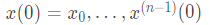
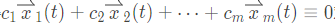
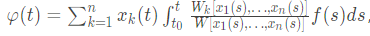

微分方程
定义:自变量只有一个的微分方程为常微分方程
阶
定义:微分方程未知函数的最高阶导数或微分的阶数
一般形式：
线性与非线性
定义:若方程 为y,
为y, 的一次有理式，则其为n阶线性方程
的一次有理式，则其为n阶线性方程
一般形式：
解
定义:
y=φ(x)在I上有直到n阶的连续导数
y=φ(x)为方程在 在I上的一个解
在I上的一个解
显式/隐式解：
隐式：最终解的形式为隐函数
显式：如解的定义中所描述的形式
通/特解：
通解：解中含有相互独立的任意常数，且其常数个数与微分方程的阶数相同。形如
特解：给定常数确定值得到的解
定解条件：实际问题附加给微分方程的条件，求解该类问题为定解问题
初始条件（初值问题）：x=x0时y=y0，
驻定方程： ，即右侧不含自变量t，则方程驻定/自治。
，即右侧不含自变量t，则方程驻定/自治。
相空间：不含自变量，仅含有未知函数组成的空间，积分曲线在相空间的投影为轨线
 该解也称为平衡解、驻定解或奇点、平衡点。
该解也称为平衡解、驻定解或奇点、平衡点。
变量分离方程
- 形如
 的方程，称为变量分离方程
的方程，称为变量分离方程
齐次方程
- 形如
 的方程，称为齐次方程
的方程，称为齐次方程
线性微分方程
- 形如
 的方程，称为一阶线性方程
的方程，称为一阶线性方程 - 公式
 为一阶线性方程的求解公式
为一阶线性方程的求解公式 - 解法
 称为伯努利方程
称为伯努利方程 称为黎卡提方程
称为黎卡提方程
恰当方程与积分因子
 为恰当方程或全微分方程
为恰当方程或全微分方程- 恰当的充要条件：

- 解法：
- 积分因子：存在
 ,使得
,使得 为恰当方程，即对非恰当方程乘以一个积分因子μ(x,y)使之成为恰当方程。
为恰当方程，即对非恰当方程乘以一个积分因子μ(x,y)使之成为恰当方程。 - 积分因子充要条件及其求得：

- 两个积分因子都可以通过定义来计算，但这样比较繁琐。
- 尝试计算ψ及φ，看看是否真的与x，y无关，并求解。
- 若能猜测积分因子的基本形式，可进行假设，然后根据恰当方程的定义求解。
- 试图直接找出原本微分方程的全微分形式，并加以求解。
一阶隐式方程及参数表示
解的存在唯一性定理与逐步逼近法
- 讨论初值问题：

- Lipschitz条件：f(x,y)为处于矩阵域
 上的连续函数，
上的连续函数，
- f(x,y)满足Lipschitz条件，则初值问题在
 上的解存在且唯一，这里
上的解存在且唯一，这里 
- 证明思路：
- 初值问题的解等价于微分方程
 的连续解
的连续解 - 构造近似解函数列{φn(x)}
- 函数列{φn(x)}在[x0-h,h0+h]上一致收敛于φ(x)
- φ(x)是积分方程定义于[x0-h,h0+h]上的连续解且唯一
解的延拓
- 根据解的存在唯一性定理，其解的存在唯一区间为|x-x0|<=h而h可能随
 增大而减小，即定义域的扩展可能会导致解的存在唯一空间减小。
增大而减小，即定义域的扩展可能会导致解的存在唯一空间减小。 - 解的延拓定理：f(x,y)在有界区域G上连续，且满足局部Lipschitz条件，则方程过
 的解y=φ(x)可延拓，直至(x,φ(x))无限接近G边界
的解y=φ(x)可延拓，直至(x,φ(x))无限接近G边界
解对初值的性质
- 考虑初值时，可将解看作

- 解关于初值的对称性：

- 解对初值的连续性：
- 解对初值的连续性定理：
- 解对初值的连续性定理:f(x,y)在区域内连续则其解函数
 在它的存在范围内连续
在它的存在范围内连续 - 解对初值和参数的连续性定理：f(x,y,λ)在区域内连续则其解函数
 在它的存在范围内连续
在它的存在范围内连续 - 解对初值可微：f(x,y)及关于y的偏导都在区域G内连续，则解
 连续可微
连续可微
线性微分方程一般理论
- 一般形式（要求各阶导数的次数为1）：
- 齐次：

- 非齐次：

- 解的存在唯一性定理（对于一组微分初值）
- 齐次线性微分方程解的性质与结构
- 叠加原理：若是原线性微分方程的解，则他们的线性组合
 也是原线性微分方程的解
也是原线性微分方程的解 - 线性相关：
 不全为0，
不全为0，
- Wronsky行列式：


- n阶齐次线性方程一定存在n个线性无关的解
- 通解基本结构：
 为一组线性无关的解（基本解组）
为一组线性无关的解（基本解组） 
- 非齐次线性微分方程解与常数变易法
- 解的和、差亦为原方程解
- 通解基本结构：

- 常数变易法：

- 对原微分方程求n-1阶导数，并代入原方程，得到线性方程组：

- 解线性方程组，得到

 ，
， 的代数余子式，可据此快速求得（如果矩阵小的话）
的代数余子式，可据此快速求得（如果矩阵小的话）- 得到通解：

- 若要得到特解，即给出γi的值
常系数线性微分方程的解法
- 复值函数：

- 复值指数函数：

- 欧拉公式：

- 复值解：
 ,z(t)为定义在[a,b]上以t为实变量的复值函数
,z(t)为定义在[a,b]上以t为实变量的复值函数
-
当f(t)=0(齐次)，ai（t）均为实值函数，则复值函数的实部、虚部、共轭复数也均是原微分方程的解
- 当
 ，ai（t）均为实值函数，则复值函数的
，ai（t）均为实值函数，则复值函数的
- 实部U（t）为

- 虚部V（t）为

- 常系数线性方程求解


- 解出方程的n个解（包括重根）
- 基础解组：
- 构成通解：

- 欧拉方程求解

- 解出n个解（包括重根）
- 基础解组：
- 构成通解：

- 常系数非齐次线性微分方程求解
- 比较系数法：

- 基本解组：

- 设方程有形式解：
 (k是λ0作为方程根时的重数，非根即为0)
(k是λ0作为方程根时的重数，非根即为0)
- 代入原方程，比较同次幂系数，解出未知系数bi
- 构成通解：
- 欧拉变换：
- 基本解组：

- (k为α+iβ作为方程特征根的重数)
- 代入原方程，比较等式两侧cost和sint的系数解出P（t）、Q（t），P（t）、Q（t）次数与A（t）、B（t）次数最大值相同
- 构成通解：

- 当仅含sin或cos项时，将其扩展为
 的形式，即
的形式，即 之后参照比较系数法求解，然后取实/虚部作为特解。
之后参照比较系数法求解，然后取实/虚部作为特解。
- 拉普拉斯变换法：
- 拉普拉斯变换：

- 性质：
- 
降阶与幂级数解法
-
可降阶类型
- 不显含x及直到k−1阶导数：
- 求通解
- 对积分n次，得到
- 不显含t
- 幂级数解法

- 可以展成x 的幂级数，以 为收敛区间
- 则原微分方程有形若的解
- 求级数形式解的各阶导数，代入原方程
- 依据初始条件、各项系数为0，得到通解（若为已知函数的级数则可合并）
- 可以展成x 的幂级数，以 为收敛区间
线性微分方程组
- 一阶线性微分方程组
- 解：函数组
- 通解：函数组
- 向量矩阵表示：
- n阶线性微分方程初值问题⇒一阶线性微分方程组初值问题（反之不一定能化）
- 存在唯一定理
- 初值问题在[a,b]上有唯一解

- 矩阵向量范数：
- 敛散性：
- 向量序列 收敛⇔每一个xk(t)收敛
- 向量函数序列级数 一致收敛
- 存在唯一定理
- 若与f(t)均为区间[a,b]上的连续函数，则对任意t0∈[a,b]及任意η1,η2,...,ηn方程在区间[a,b]上存在唯一解x=ω(t)且满足初值条件
- 命题1：原方程组在[a,b]上的解
 在[a,b]上的连续解
在[a,b]上的连续解
- 命题2：构造PicardPicard逐步逼近向量函数序列
- 命题3：向量函数序列 在区间[a,b]上一致收敛
- 命题4：是原积分方程定义在区间[a,b]上的连续解
- 命题5：设是积分方程定义在区间[a,b]上的另一个连续解，则有
线性微分方程组一般理论
- 一阶齐次
- 叠加原理：为原微分方程的m个解，则他们的线性组合也是原方程的解
- 线性相关：存在一组不全为零的ci使得对任意t∈[a,b]成立，则线性相关
- 向量函数WronskyWronsky行列式：
- 齐次线性微分方程组一定存在n个线性无关的解
- 通解结构：线性无关
- n阶线性微分方程是特殊的线性微分方程组
- 解矩阵、基解矩阵：
- 通解可以表示为其中Φ(t)为基解矩阵
- 一阶非齐次
- 解的和、差亦为原方程解
- 通解基本结构：为基解矩阵，为该非齐次线性微分方程的一个解
- 常数变易公式

- 特解：
- n阶非齐次线性微分方程：
- ，Wk是以(0,0,...,1)T取代第k列后的W
- n=2时，
常系数线性微分方程组
-
- 矩阵指数
- （一定为实矩阵）

- 常系数线性微分方程组的基解矩阵
- 基解矩阵的求法之一：
- （可逆线性替换，变换为对角矩阵，对于乘方比较容易算）
- 即为基解矩阵
- 基解矩阵计算公式
- 由计算矩阵特征值
- 解方程进而求得n个特征向量（对于重根的特征值所从属的特征向量，含有重数个基础解）有线性无关特征向量对应特征值
- 满足初值条件特解的求法
- 令满足ηi的形式。
- 当仅有一个重数为n的特征根时，
- 非齐次线性方程组
非线性微分方程及稳定性
- 一般高阶微分方程转化为微分方程组
- 自治系统（驻定方程组）：右端不显含t
- 稳定性：
- 稳定：
 对任意t>t0恒成立
对任意t>t0恒成立
- 渐进稳定：稳定，且

- 零解渐进稳定：上式中x0=0
 ，引入参数，转化为可解类型
，引入参数，转化为可解类型